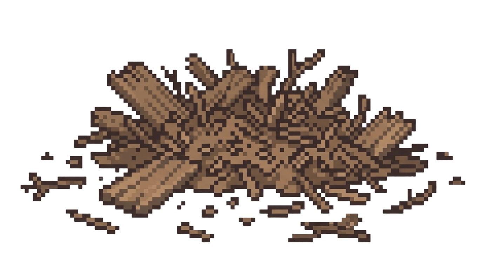
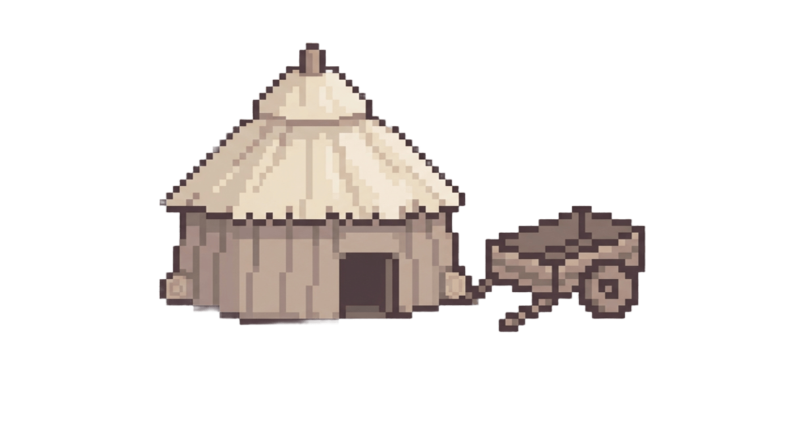

Mochileiro
Dia
1
Próximo dia
05:00
Ouro
200
Madeira
0
▦
←
Ir para a capital
→
Ir para a coleta

Destroços do mercador
Madeira: 0/50

Casa do mercador
Casa reconstruída
Mercador resgatado.
×
Resgatar o mercador
Protótipo local · progresso salvo neste dispositivo